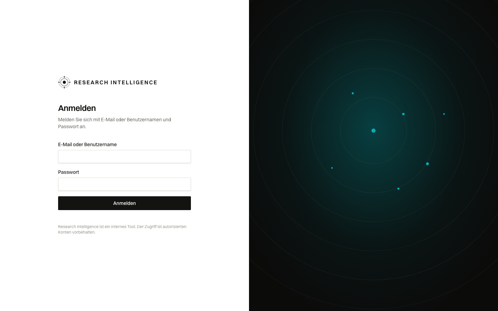
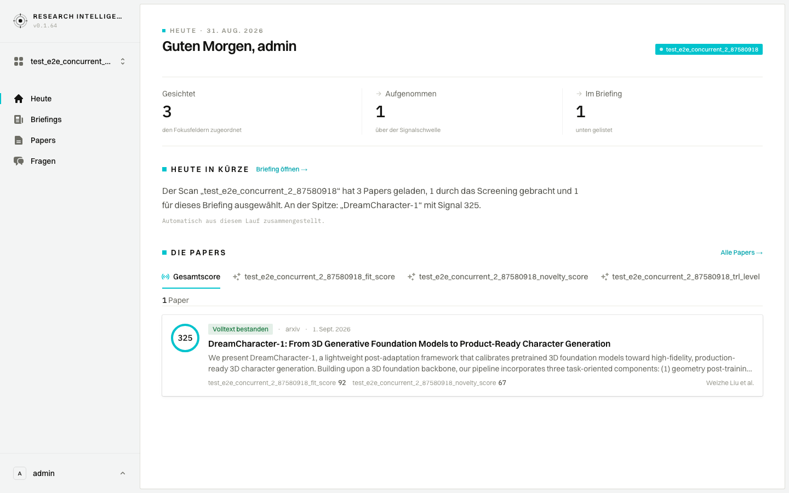
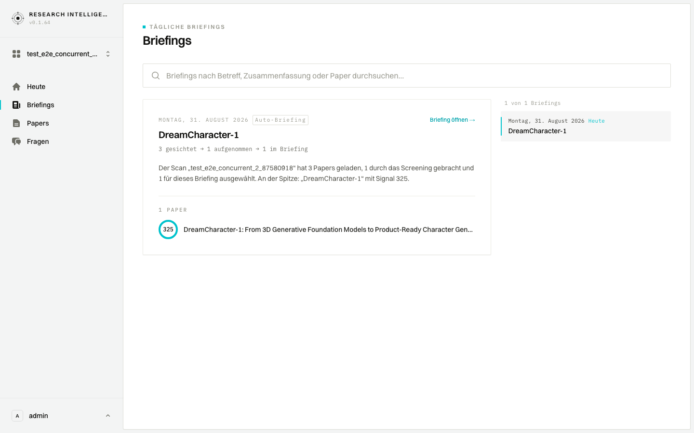
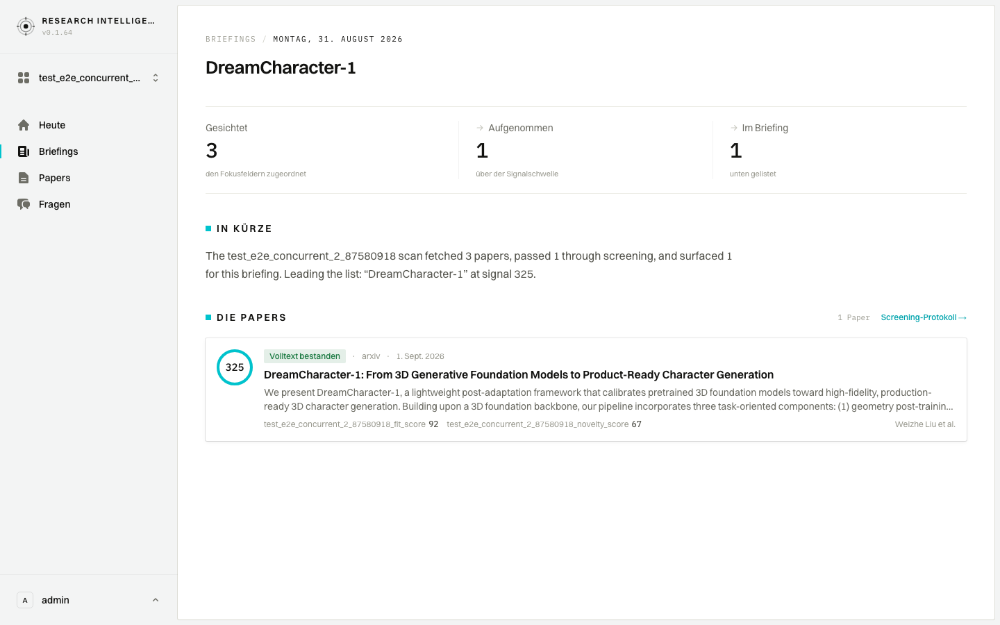
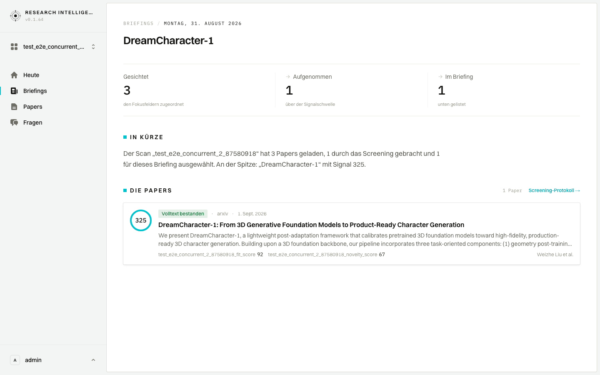
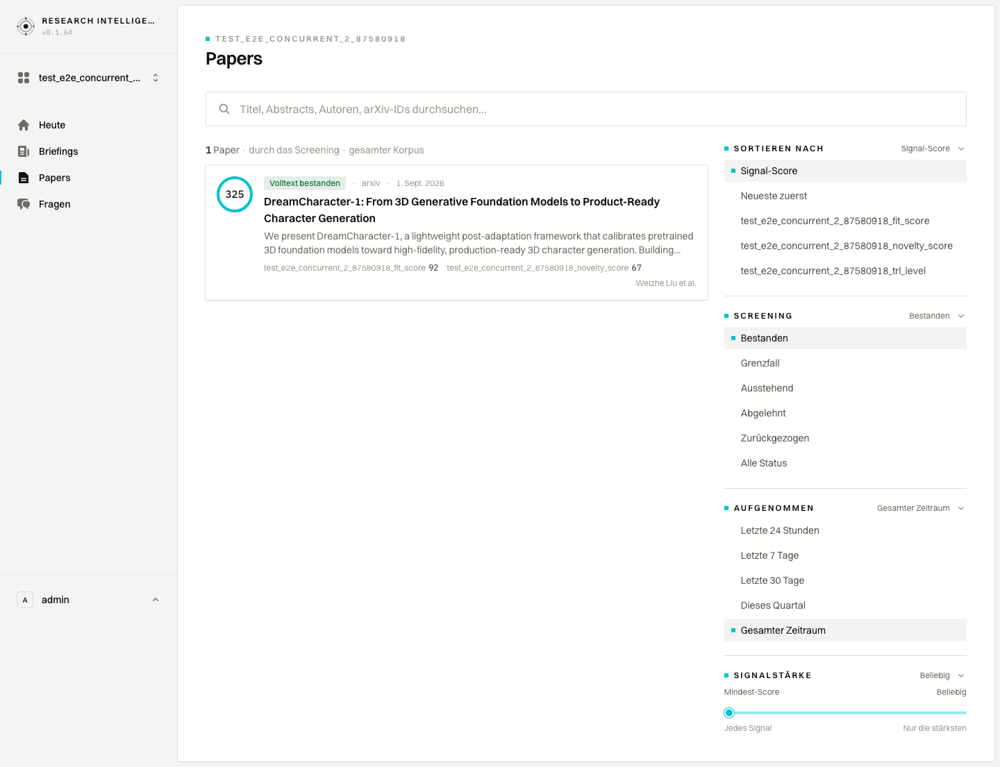
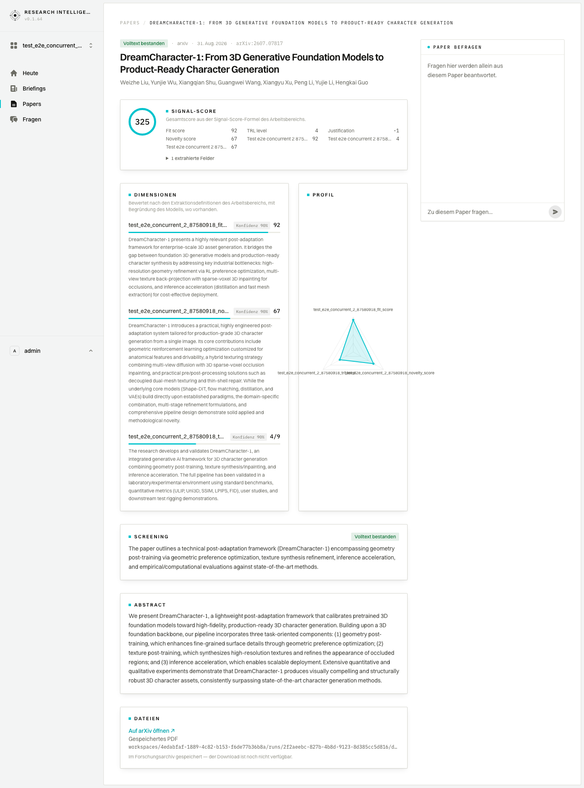
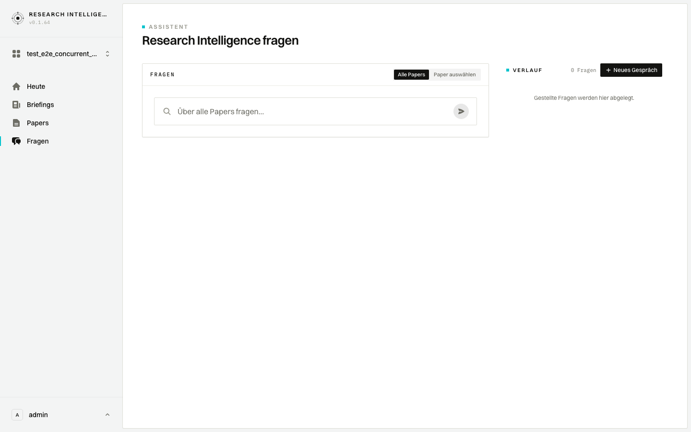
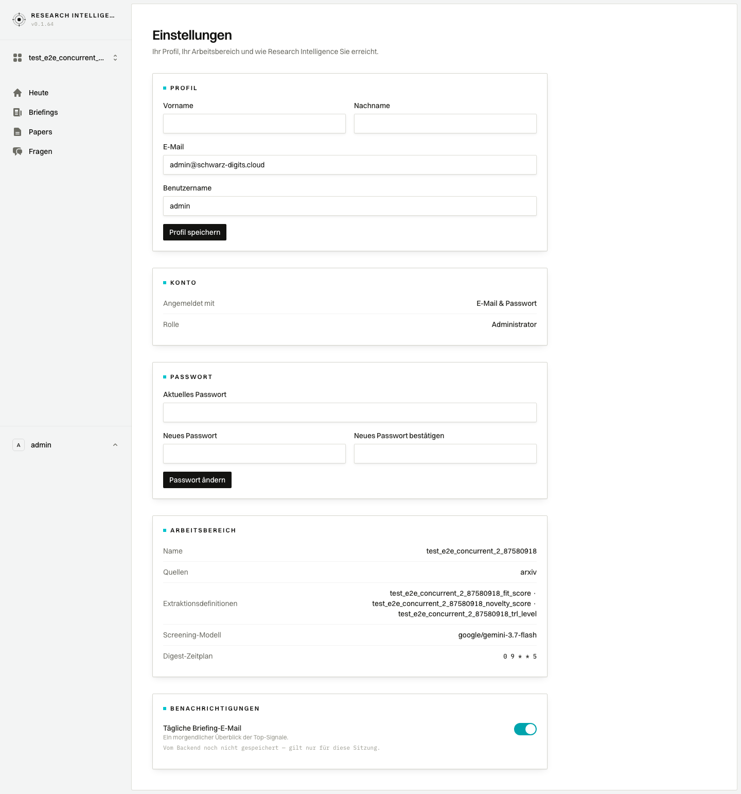

i18n P0 — before / after
German UI (rs-lang=de) against the 2026-08-31 prod-snapshot replay. Before = main @ e78847e; after = the P0 i18n pass (PR #16), now on main. Desktop 1440×900, full page. Reasoning and the full finding list: audit.html; remaining work: docs/i18n-backlog.md.
Login
Was 100% English regardless of language; now fully German, and a German browser lands here in German on the very first visit (Accept-Language → rs-lang cookie, injected into the same request). Sign-in errors are now codes translated client-side.


Dashboard
The “Heute in Kürze” paragraph was English template prose; now German (templateProse(input, lang)). The dev note “modellgeschriebene Briefings kommen mit dem Reporting-Schritt des Backends” became “Automatisch aus diesem Lauf zusammengestellt.” <html lang> is now de.


Briefings
“Auto-Brief” (reads as “automatic letter”) → “Auto-Briefing”; the edition summary sentence is now German.


Briefing edition + screening log
“In Kürze” now German. (The screening reasons remain English by design — backend-generated content.)


Papers
The Signalstärke filter showed untranslated “Any” twice; now “Beliebig”.


Paper detail
“Noch kein Datei-Endpunkt — Speicherschlüssel nur zur Referenz” → “Im Forschungsarchiv gespeichert — der Download ist noch nicht verfügbar.” Breadcrumb aria-label translated.


Ask
The hardcoded “ASK” console eyebrow is now “FRAGEN”; the history count no longer reads “0 gefragt” (now “{n} Fragen” with a proper “1 Frage” singular).


Settings
Raw cron 0 9 * * 5 → “freitags um 09:00 Uhr”; “Vom Backend noch nicht gespeichert” → “Wird derzeit nur für diese Sitzung gespeichert.”; the tab title is now translated too (generateMetadata).
